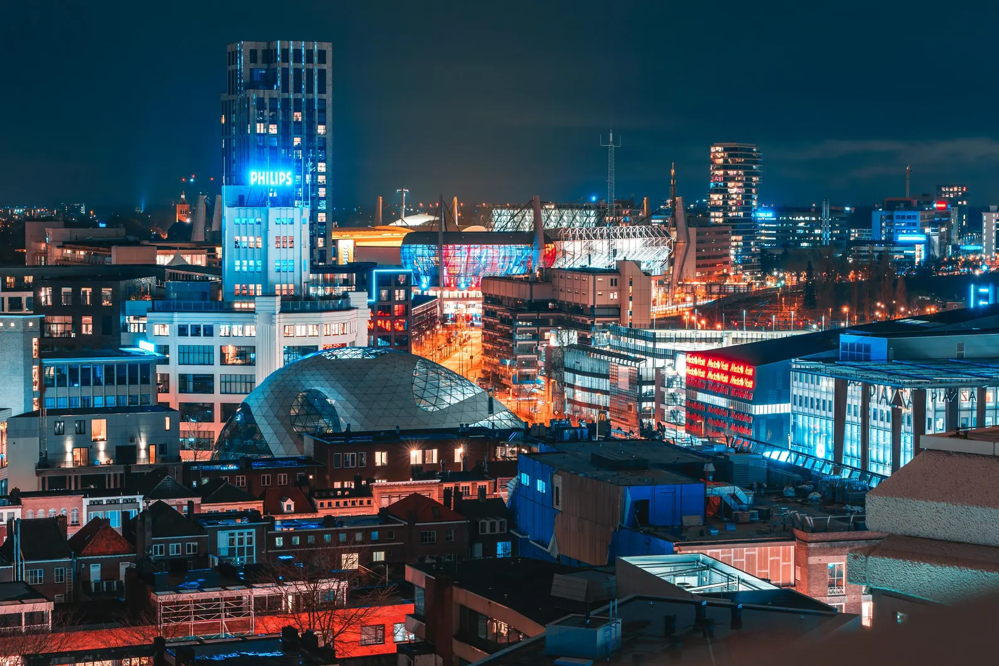
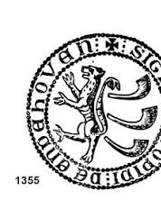
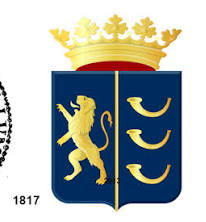
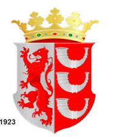
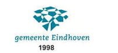

1232 — 2032
Van middeleeuws stadje met stadsrechten tot dé Brainport van Nederland. Ontdek acht eeuwen geschiedenis, verteld in beeld, tijdlijn en verhaal.
Bekijk de tijdlijn ↓Nog tot 800 jaar Eindhoven
Het verhaal
800 jaar in vogelvlucht
Scroll horizontaal door acht eeuwen Eindhovense geschiedenis — sleep, swipe of gebruik de pijltjes.
Van zegel tot beeldmerk
Zo veranderde het gezicht van Eindhoven: van een middeleeuws stadszegel, via een trots stadswapen met leeuw en kroon, tot het strakke, moderne beeldmerk van vandaag.

Het oudste bekende stadszegel: Sigillum Opidi de Eindahoven, met een leeuw als heraldisch symbool.

Het officiële stadswapen: een gouden klimmende leeuw en drie korenschoven op een blauw veld, bekroond met een gouden kroon.

Na de annexatie van 1920 kreeg het wapen een nieuwe, rood-zilveren kleurstelling — passend bij de gegroeide stad.

Een abstract, modern beeldmerk: het wapen maakt plaats voor een strak "kristal"-symbool in Eindhovens blauw-groen.
Het huidige logo: de rode "vaandels" verwijzen naar het wapen van 1817, in een fris en herkenbaar hedendaags jasje.
Toen en nu
Van middeleeuwse kaarten en fabrieksarbeiders tot de skyline van vandaag: acht eeuwen Eindhoven in foto's.
Foto's: Wikimedia Commons, diverse fotografen & publiek domein bronnen (o.a. Nationaal Archief / Anefo, Rijksdienst voor het Cultureel Erfgoed, Imperial War Museums).
Contact
Onze chatbot Rob beantwoordt je vragen over 800 jaar geschiedenis van Eindhoven. Klik rechtsonder op zijn foto om te beginnen!